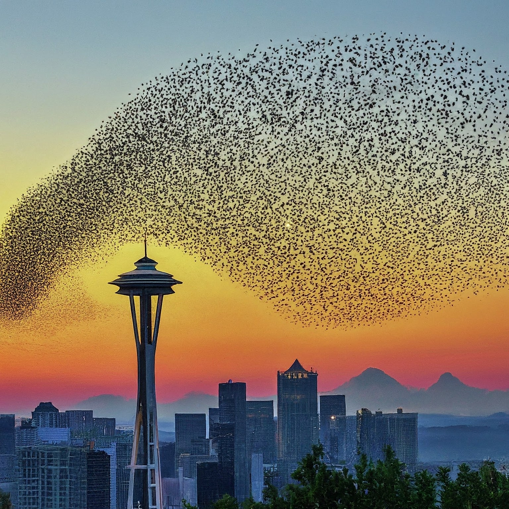
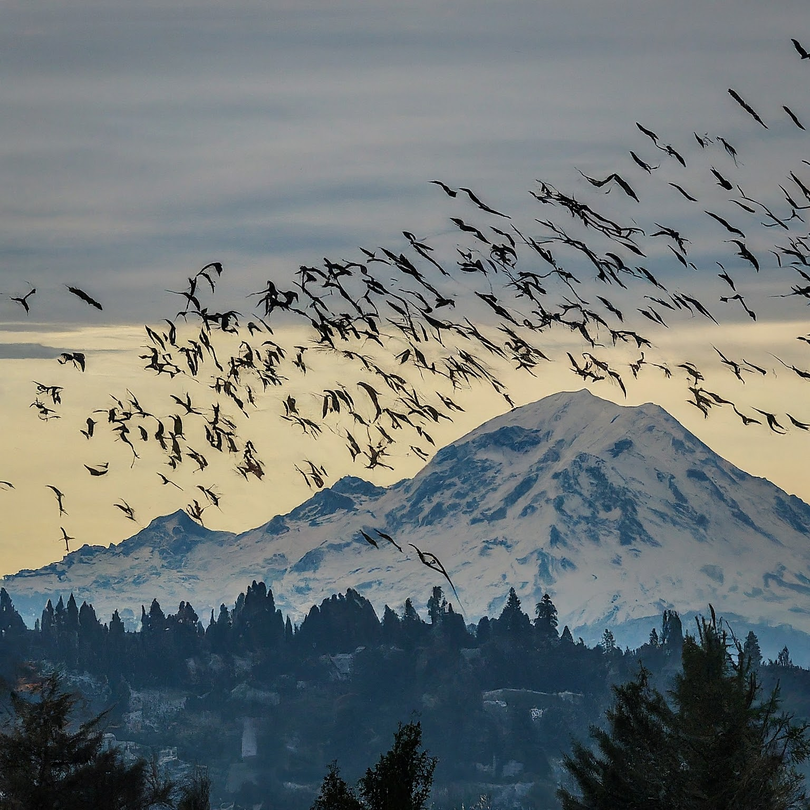
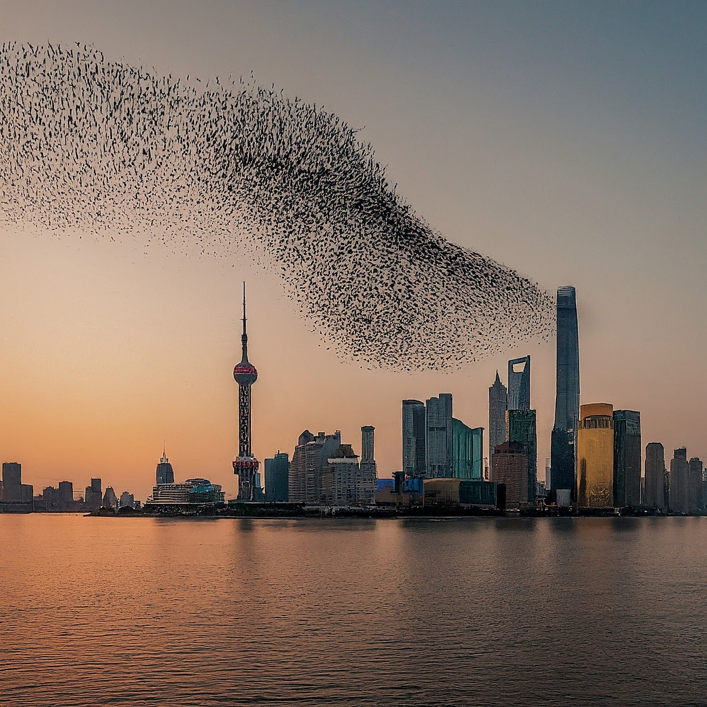

Additional AI-generated Bird Migration with Shape-shifting Starlings
In Seattle and Shanghai

The first image is from "Solkaer's Sort Sol" series, which studies the murmurations of starlings. I recently visited the National Nordic Museum in Seattle to witness the beautiful moment of bird migration. The Danish term "sort sol” refers to these murmurations, the formations of which temporarily obscure the sun. A “murmuration” is the shape made by a flock in flight. The word derives from “murmur,” the soft sound of the starlings’ flight calls and fluttering wings as they move together in midair. Starling murmurations take myriad forms—from abstract to representational, and Solkær has captured this phenomenon across Europe since 2017. Occurring before dusk in the spring and fall months, this mysterious act may function as an open call to join the evening roost and provide protection against predators.

This image showcases a large flock of birds soaring through the sky in a V formation among Space Needle in Seattle. This pattern is believed to be a cooperative strategy for migration, as the lead bird breaks wind resistance for those following, conserving energy for their long journey.

This image portrays a breathtaking starling murmuration, where thousands of birds fly in a coordinated, ever-shifting dance across the sky across Mount Rainier. The hey may serve as a defense against predators, conserve energy through coordinated flight, or facilitate communication within the flock.

The image captures the awe-inspiring phenomenon of birds unfolding over the vibrant city of Shanghai. These mesmerizing formations, involving thousands of birds moving in synchronized, ever-shifting patterns, hold a captivating beauty. Regardless of the precise meaning, the spectacle of a murmuration dancing across the Shanghai skyline serves as a powerful reminder of the intricate and wondrous diversity of the natural world.